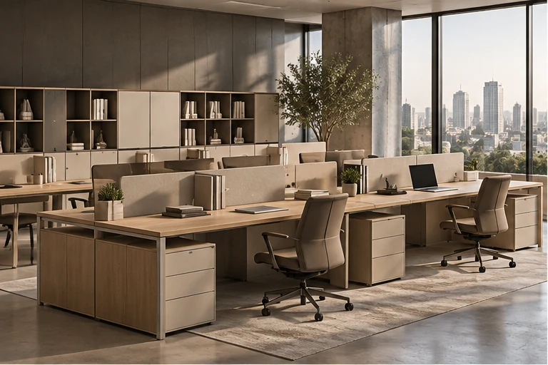

01 / 05SPACEMAKERS OFFICE · 01
Operational Desks
Practical Furniture for Everyday Work
An effective workstation should provide enough room for daily tasks while keeping documents, equipment, and personal items organised. Zalf offers operational desk configurations with different support structures, storage options, and workspace arrangements.
Selected designs incorporate Freespace bookcase systems, drawers, cabinets, and desk screens to help define individual workstations within shared offices.
- Different desk layouts and support structures
- Storage units and drawers in selected configurations
- Integration with Freespace systems
- Desk screens for shared workspace layouts
- Coordinated furniture finishes